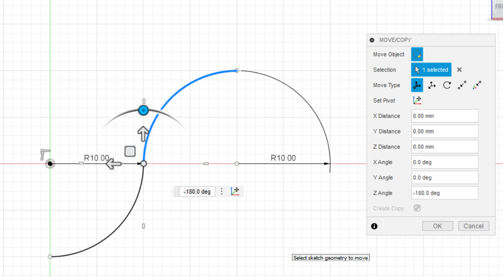
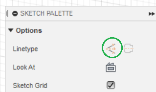
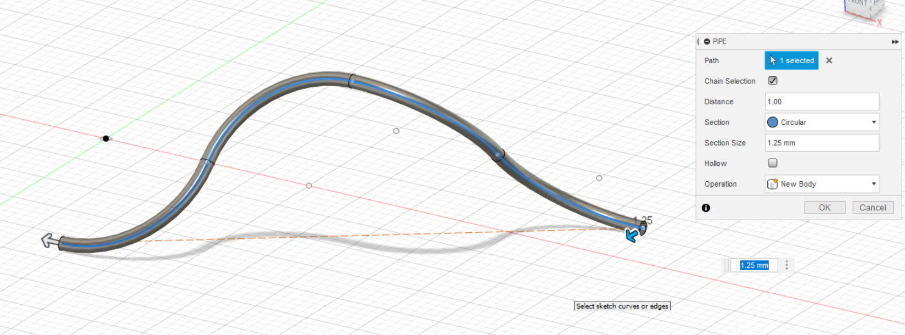
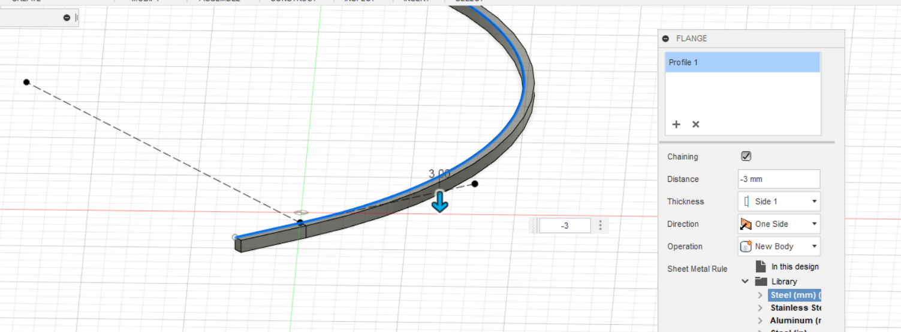
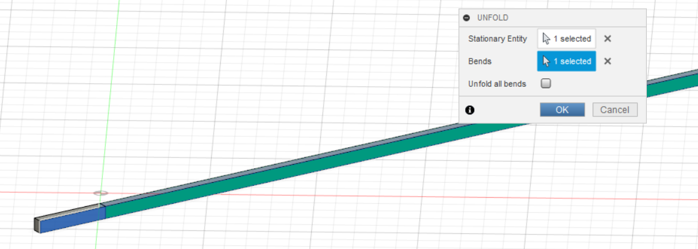
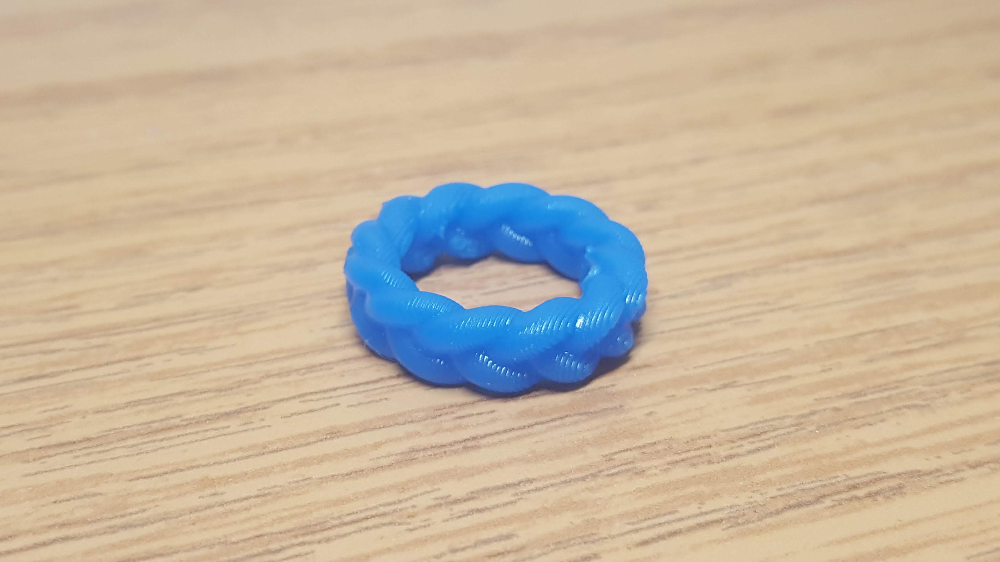

SLA Printers differ from standard PLA printers in nearly all aspects. Most significant of these differnces is the method of printing itself. Where a PLA printer extrudes melted plastic filament downwards onto a build plate, SLA printers essentially do the opposite, with the build plate coming down from the top of the printer, then lifting upwards as UV lights polymerize the resin into the proper shape. This results in a far smoother and more detailed print that with PLA printing, but there are some downsides. Support material from SLA printing can be harder to cleanly remove than with PLA, and there are far more steps involved in the printing process. Keeping the printer clean is very important, as a stray drop of resin into the lens can seriously damage the machine. Additionally, the resin is poisonous, and as such must be handled carefully and cleaned up throughly. SLA prints must also be put through a wash and baked in a heater before they are truly done, where a PLA print is finished right off the build plate.
I chose to follow the braided ring tutorial video provided, as having a cool design was more interesting to me than the spinning ring. The video was good for the most part, being relatively easy to follow and doing a good job showing off the technqiques used in the pattern. However, especially later in the video it became harder to follow closely along, with the creator making many shapes and lines with seemingly random numbers as placeholders, but not indicating that those numbers did not need to be followed. Additionally, the lack of narration as a whole made absorbing the tutorial more difficult, and involved a lot of stopping and repalying certain parts since it happened so fast.
I was still able to follow it enough to get my design done however, and learned a bunch of new Fusion 360 tools along the way. While quite basic, I used the move/copy tool for the first time, with the tutorial doing a great job demonstrating how to copy and manipulate different shapes. another simple but useful tool was changing the line type to a contruction line, which is used for measuring and connecting points but does not translate into the actual model.
 Some more advanced tools the video taught me about were the pipe, flange, and fold/unfold functions. The pipe is the most straightforward, creating a cylindrical pipe around a line you select, used in this patter to make the strands that braid together. Flange is similar to the exturde tool, except it only brings down the sides of the selected surface, with no top or bottom and the inside hollow. Finally, the fold/unfold tool allows you to take a curved shape and make is traight for easier editing, then set it and whatever you've added back to its original curved form.
  This project was pretty challenging for me, with the tutorial being somewhat hard to follow at places and Fusion 360 being a bit difficult to work with, but it all worked out in the end!
 Design file.